SciPost Phys. 19, 058 (2025)
Feb 9, 2026
Can we tell topology from quantum transport?
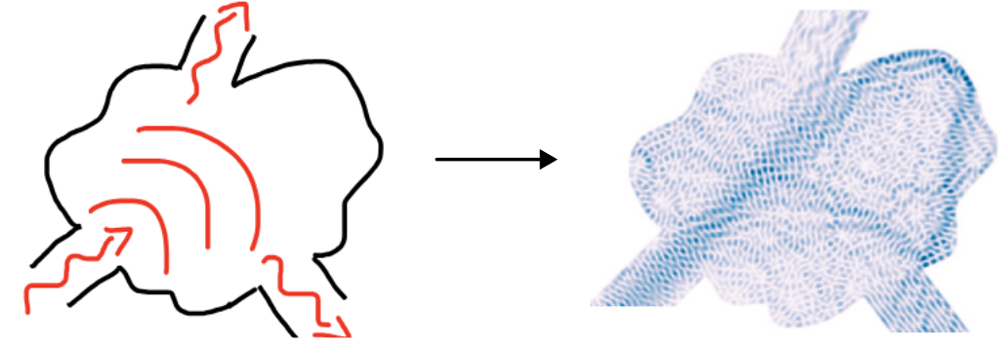
Figure from Kwant
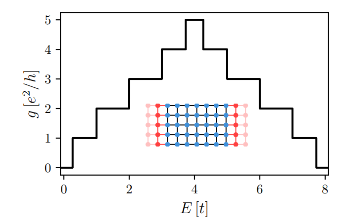
Conductance across a metallic wire
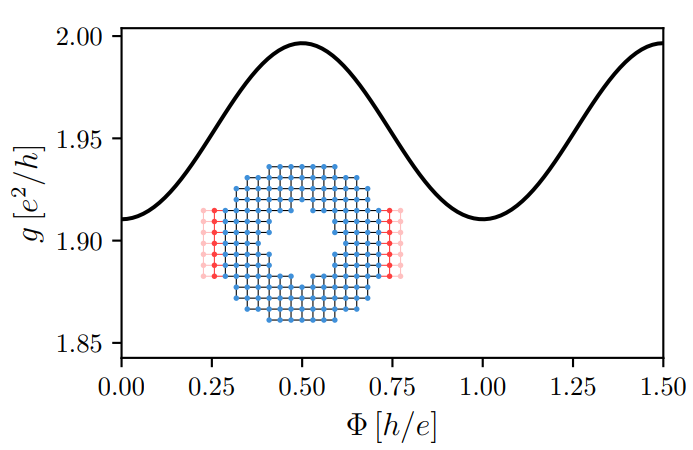
Aharonov-Bohm conductance oscillations
Waintal et al., 2024
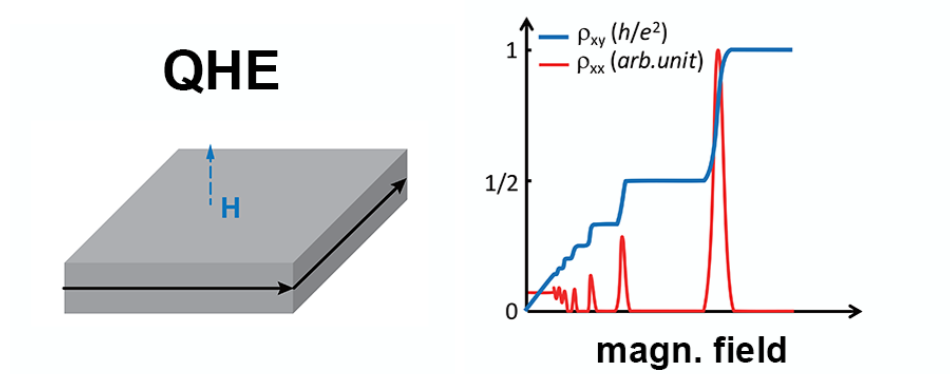
Quantum Hall sample
without backscattering
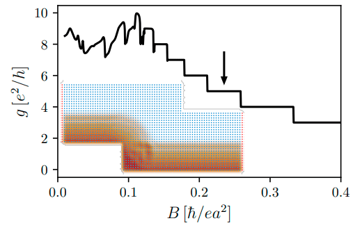
Quantum Hall sample
Advantages:
Waintal et al., 2024
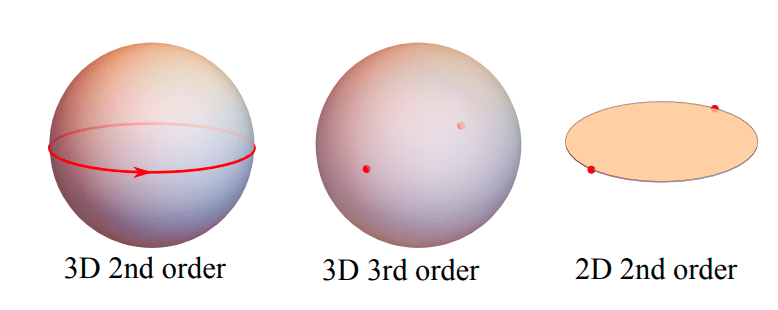
Properties:
Khalaf et al. (2018), Schindler et al. (2018)
Can we tell topology from quantum transport if surface modes do not propagate?
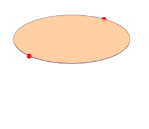
2nd order TI protected by \(C_2\) and \(\mathcal{C}\)
Can we tell topology from quantum transport if surface modes do not propagate?
Useful for:
A 3D topological insulator that preserves inversion symmetry on average
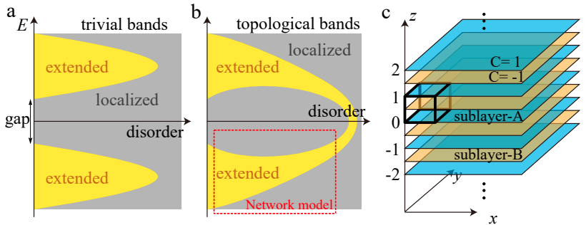
In practice computing trivial and topological phases requires a convenient construction
Song et al. (2021)
A topological phase that does not exist in clean systems, but only in disordered ones!
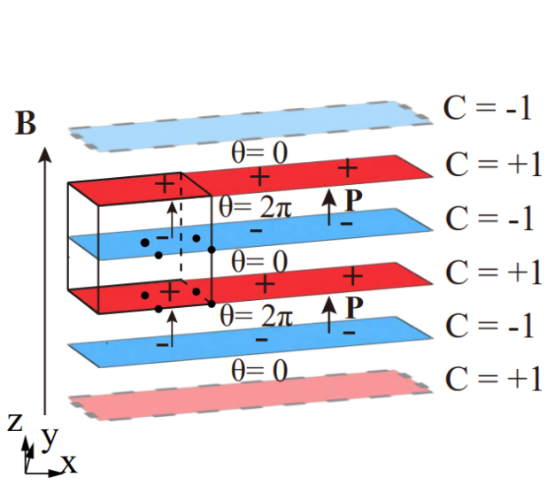
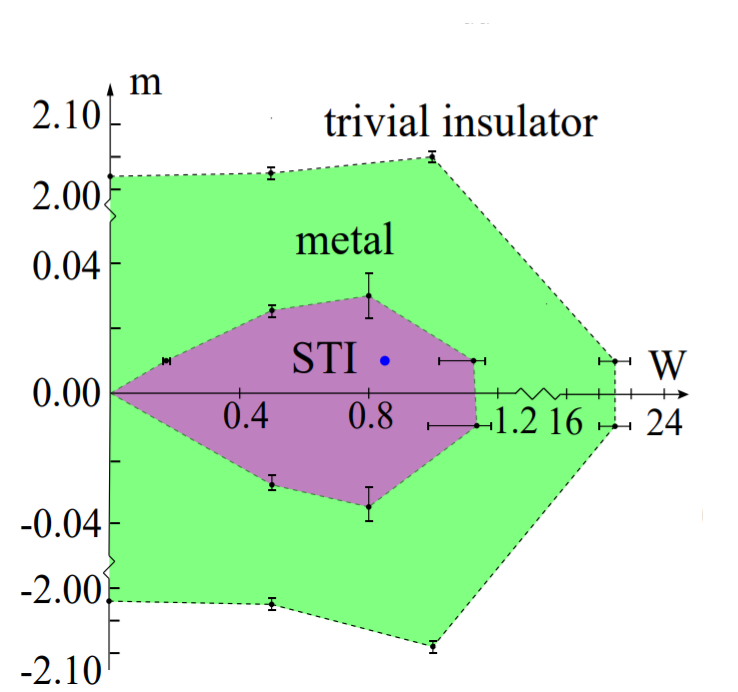
\(W=0\) gives trivial phase or a metal
\(W \neq 0\) gives statistical topological phase
Predictions with disorder are hard to test
Chen et al. (2025)
Scattering matrix and Hamiltonian are related by
\[ (H-E)(\Psi^{\textrm{in}} \alpha^{\textrm{in}} + \Psi^{\textrm{out}} S(E) \alpha^{\textrm{in}} + \Psi^{\textrm{localized}} \alpha^{\textrm{in}}) = 0 \]
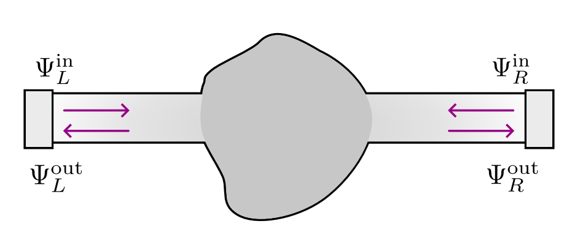
\[ S = \begin{pmatrix} r_{LL} & t_{LR} \\ t_{RL} & r_{RR} \end{pmatrix} ; \; S S^\dagger = 1 \]
\[ S = \begin{pmatrix} r_{LL} & 0 \\ 0 & r_{RR} \end{pmatrix} ; \; r r^\dagger = 1 \]
gapped system
Example: 1D topological superconductor
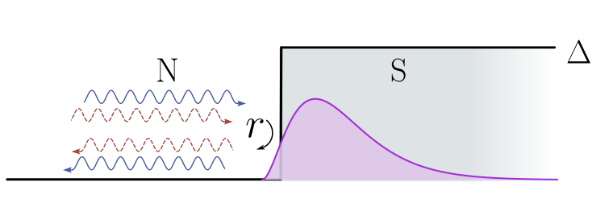
Current conservation: \(rr^\dagger = 1 \implies \lvert \det r \rvert = 1\)
Particle-hole symmetry: \(r \in \mathbb{R} \implies \textrm{Im} \det r = 0\)
\[ \implies \mathcal{Q} = \det r = \pm 1 \in \mathbb{Z}_2 \]
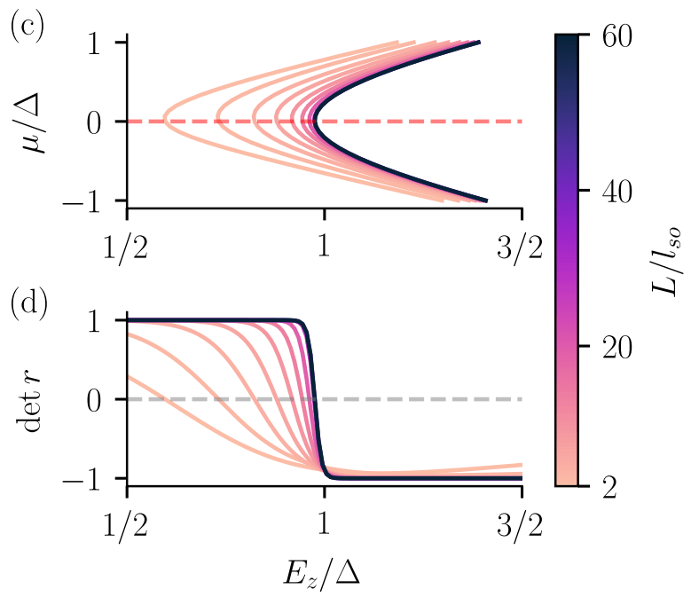
Fulga et al. (2011), Araya Day et al. (2025)
Example: 1D topological superconductor
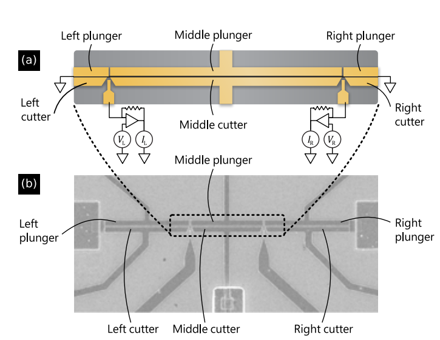
Microsoft topological gap protocol
\[ \implies \mathcal{Q} = \det r = \pm 1 \in \mathbb{Z}_2 \]
Microsoft Quantum (2024)
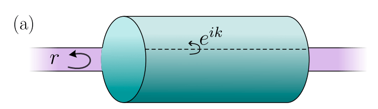
1D reflection matrix \(r(k_y)\) from 2D gapped Hamiltonian \(H(k_x, k_y)\)
Recipe:
Fulga et al. (2011)
Example: 2D Chern insulator
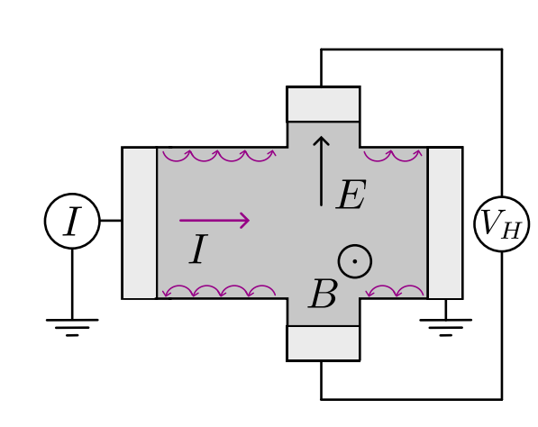
\[ C = \frac{1}{2\pi} \int_\textrm{BZ} d {k}^2 \textrm{tr} \nabla \times \mathcal{A}( k) \]
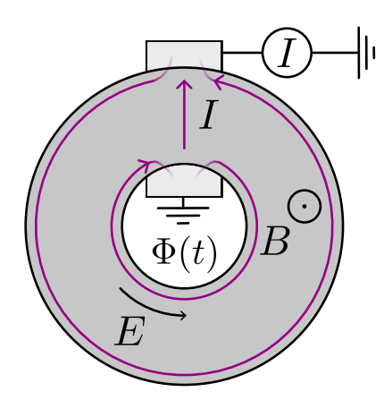
\[ C = \frac{1}{2\pi i} \int_0^{2\pi} d\Phi \frac{d}{d\Phi} \log \det r(\Phi) \]
Scattering geometry is that of Laughlin’s argument
Zijderveld et al. (2025)
Example: 2D second-order HOTI protected by \(C_4\) and \(\mathcal{C}\)
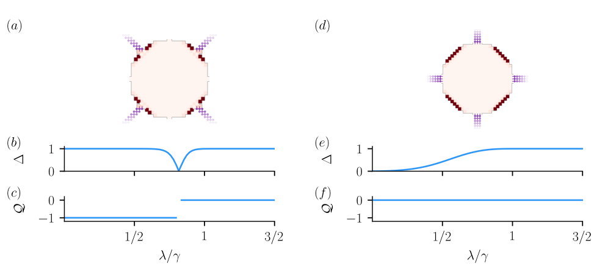
Problems with the invariant \(\mathcal{Q} = \textrm{signature}(r)\):
Zijderveld et al. (2025)
A generalization to spatial symmetries
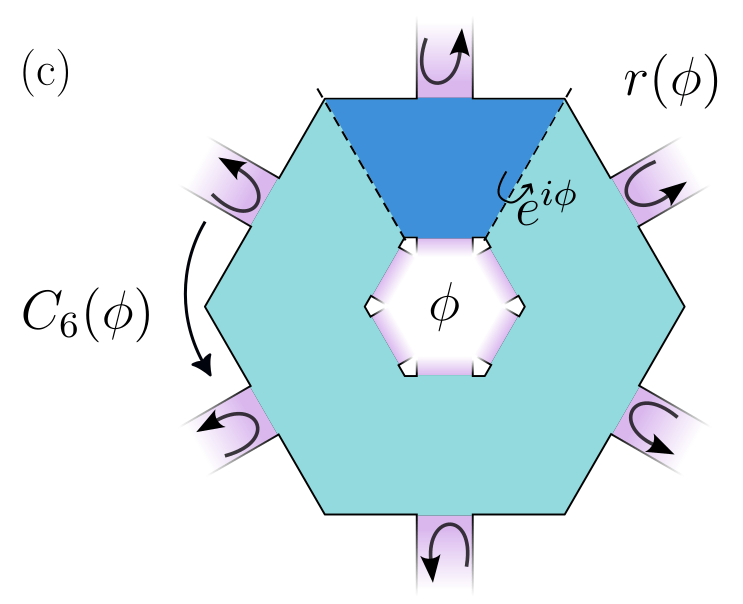
Recipe:
Zijderveld et al. (2025)
One constraint per symmetry: \(C_4\) and \(\mathcal{C}\)
\[ r(\phi) = -V_{C_4} (\phi) r V_{C_4}^\dagger(\phi) \]
\[ r(\phi) = r^\dagger(\phi) \]
\[ \implies r'(\phi) = \begin{pmatrix} 0 & h(\phi) \\ h^\dagger (\phi) & 0 \end{pmatrix} \]
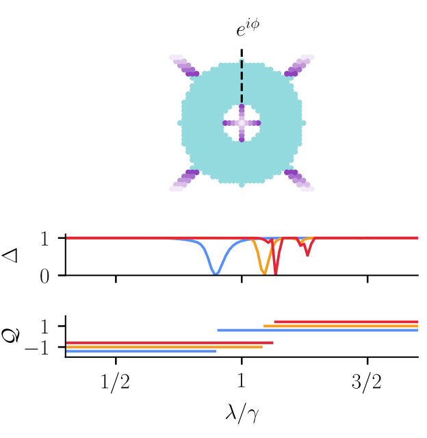
Scattering invariant:
\[ Q = \textrm{sign} ( \textrm{det}h(\phi) \textrm{exp} \left[\frac{1}{2} \int_{-\pi}^{\pi} d \textrm{log} \; \textrm{det}h(\phi) \right]) \in \mathbb{Z}_2 \]
Zijderveld et al. (2025)
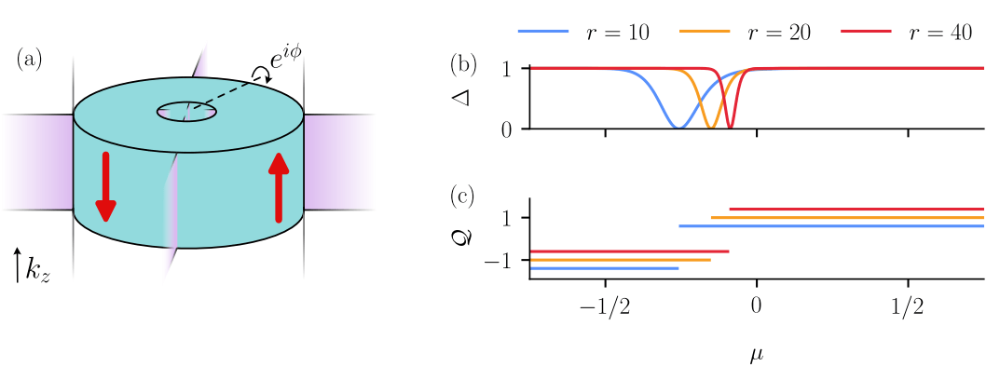
Protected by \(C_4 \mathcal{T}\) and \(\mathcal{P}\) such that \((C_4 \mathcal{T})^4 = -1\)
\[ \mathcal{Q} = \frac{\textrm{Pf}[H_{\textrm{eff}}(0, \pi)]}{\textrm{Pf}[H_{\textrm{eff}}(0, 0)]} \exp \left[ -\frac{1}{2}\int_0^\pi d\log \; \det H_{\textrm{eff}}(0, k_z) \right] \; \in \mathbb{Z}_2 \]
Zijderveld et al. (2025)
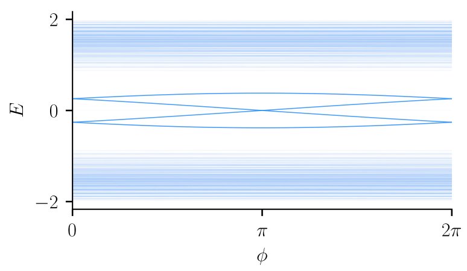
Flux captures spectral flow of modes at the surface
Zijderveld et al. (2025)
What does the HOTI pump per symmetry sector?
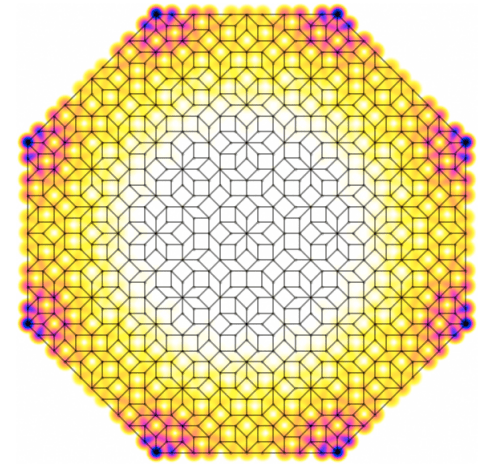
Properties of statistical phases:
Zijderveld et al. (2026)
Example: intrinsic disordered \(C_2\) symmetric HOTI
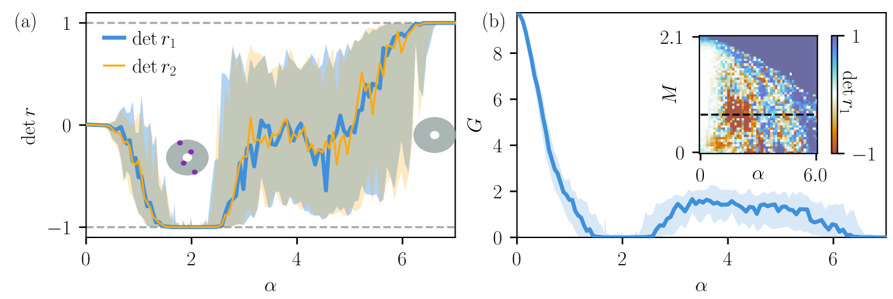
Properties of statistical phases:
Zijderveld et al. (2026)
Scattering theory of higher-order topological phases
Symmetric approximant formalism for statistical topological matter